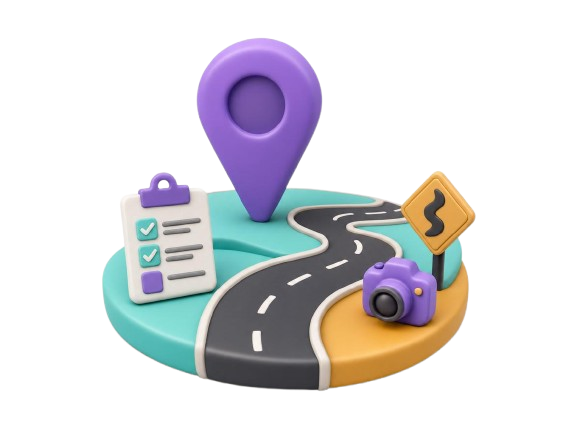

Get SurveyStar
Free to download for Android 8.0+ devices.
Works on Android 8.0 and above · No subscription · Offline-first

A complete road survey app for field engineers — GPS chainage tracking, geo-tagged media, voice notes, and cloud sync. Works fully offline.
SurveyStar is an Android application developed by Phoenixtek Solution for highway engineers, road survey consultants, and government field teams. It replaces paper-based survey workflows with a fast, GPS-driven mobile experience — from chainage logging to geo-tagged photos and voice-dictated notes.
Everything works offline. Survey data syncs to the cloud automatically when a connection is available, and restores on new devices automatically.
Real-time chainage computed via Haversine formula. Supports increasing and decreasing direction. Set start chainage per session; resume from last point.
Full-resolution photos watermarked with timestamp, GPS coordinates, chainage, category tags, and your brand — automatically.
Record video with a per-second GPS subtitle (SRT) track embedded. Add voice narration — synced transcript included.
Dictate log-point notes hands-free in English, Hindi, or Bengali — using fully on-device voice recognition. No internet needed.
Projects and log points sync to Firestore automatically. Media syncs to Google Drive or NAS. Restores on reinstall or a new device.
Log survey points with name, 8 condition categories, free-text notes, GPS coordinates, and chainage stamp — all in one tap.
Export survey logs as CSV for Excel and reporting, or as KML for direct import into Google Earth, GIS tools, and mapping platforms.
Screen stays awake during tracking. Dims after 30s idle, wakes on touch. Project dashboard with KPIs. Material light/dark theme.
SurveyStar is purpose-built for the day-to-day work of highway engineers, road survey consultants, and government field teams:
| Specification | Details |
|---|---|
| Platform | Android 8.0 and above |
| Connectivity | Fully offline — syncs when connected |
| GPS | Live chainage (Haversine), coordinates, speed, accuracy, lock status |
| Media | Geo-tagged photos, GPS-subtitle video, voice-narrated video |
| Voice recognition | On-device, offline — English, Hindi, Bengali |
| Cloud backend | Firestore (Offline-first, auto-sync), Google Drive / NAS media |
| Authentication | Google Sign-In, per-user data isolation |
| Export | CSV / Excel compatible, KML (Google Earth & GIS) |
| Developer | Phoenixtek Solution, Kolkata, India |
Free to download for Android 8.0+ devices.
Works on Android 8.0 and above · No subscription · Offline-first